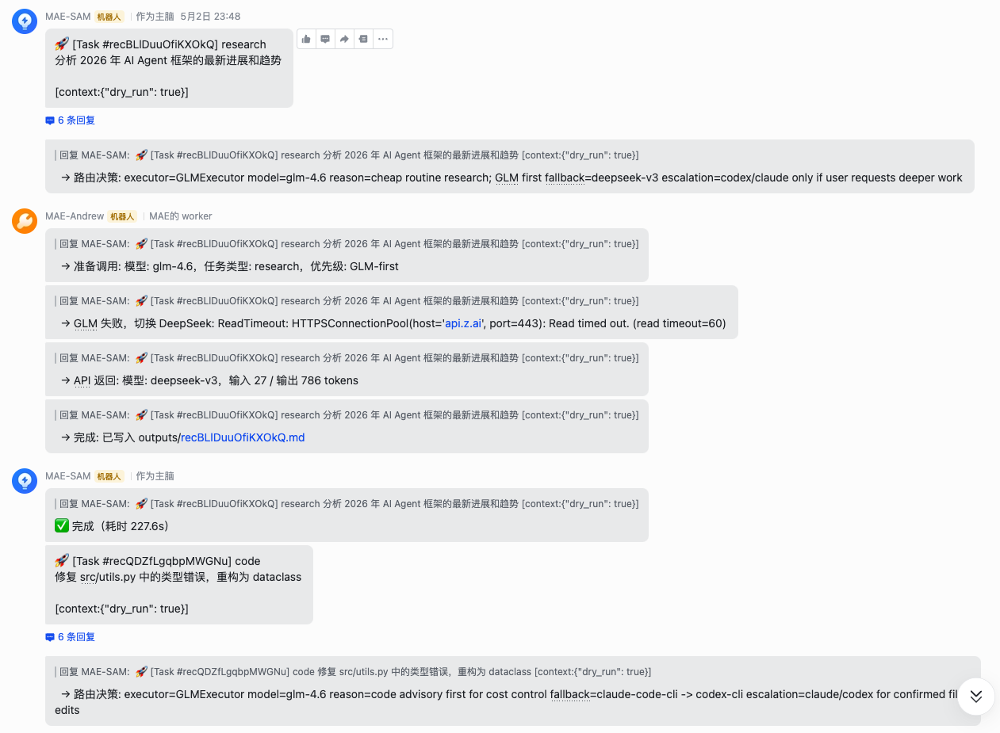

Q1
你是不是每天都在用 AI？
每天都用 / 一周几次 / 偶尔 / 基本不用
Q2
有没有玩过 n8n / Dify？
搭过 workflow / 试过一点 / 听过 / 没听过
Q3
有没有听过 / 玩过 MCP？
自己配置过 / 用过 / 听过 / 没听过
Q4
有自己的 Skill / SOP / Prompt 包吗？
有体系化 Skill library / 零散 prompt / 临时问 / 还没开始
Live Interaction
现场互动入口
优先现场举手；如果要更正式，可以放飞书问卷 / Mentimeter / 微信投票二维码。
